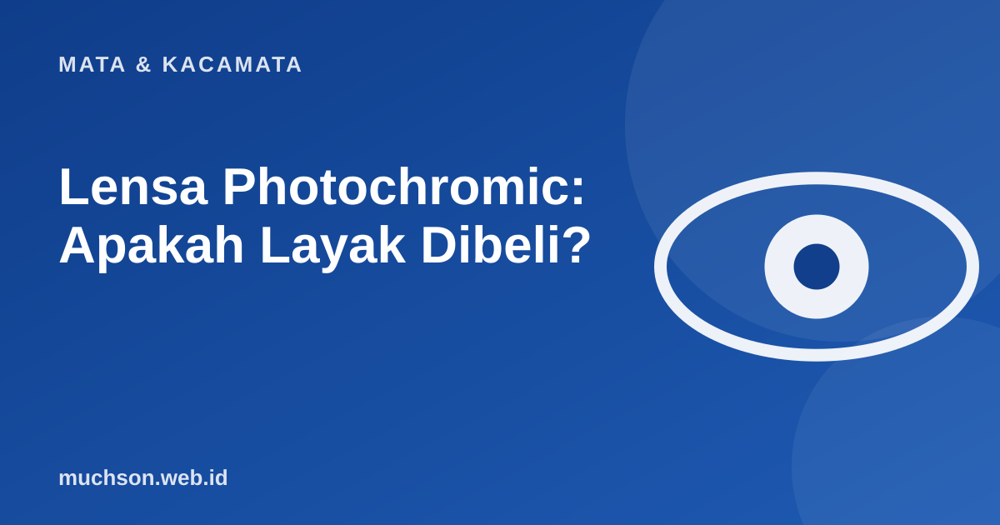

Beranda › Artikel › Mata & Kacamata
Mata & KacamataLensa Photochromic: Apakah Layak Dibeli?
Satu kacamata yang jernih di dalam ruangan dan otomatis gelap saat di luar terdengar ideal. Memang praktis, tetapi ada keterbatasan yang perlu diketahui sebelum membayar lebih. Berikut penjelasan yang jujur.

Cara kerjanya
Lensa photochromic mengandung molekul yang berubah struktur ketika terkena sinar ultraviolet (UV). Struktur baru ini menyerap lebih banyak cahaya sehingga lensa tampak gelap. Ketika UV hilang, molekul kembali ke bentuk semula dan lensa jernih lagi. Prosesnya bukan instan: menggelap cukup cepat dalam hitungan detik hingga menit, dan memudar kembali biasanya lebih lambat.
Keterbatasan yang sering luput
- Tidak menggelap di dalam mobil. Kaca depan mobil menyaring sebagian besar UV, sehingga lensa tidak banyak berubah saat mengemudi.
- Suhu memengaruhi. Pada cuaca panas lensa cenderung kurang gelap dan lebih lambat menjadi gelap dibanding cuaca dingin.
- Tidak segelap kacamata hitam penuh. Cocok untuk silau ringan hingga sedang, belum tentu cukup untuk silau ekstrem.
- Memudar setelah bertahun-tahun. Kemampuan berubah warna menurun seiring pemakaian.
- Harga lebih tinggi dibanding lensa biasa.
Siapa yang paling terbantu?
Lensa photochromic bukan pengganti perlindungan mata dari silau ekstrem seperti di pantai atau salju. Untuk kondisi itu, gunakan kacamata hitam yang sesuai.